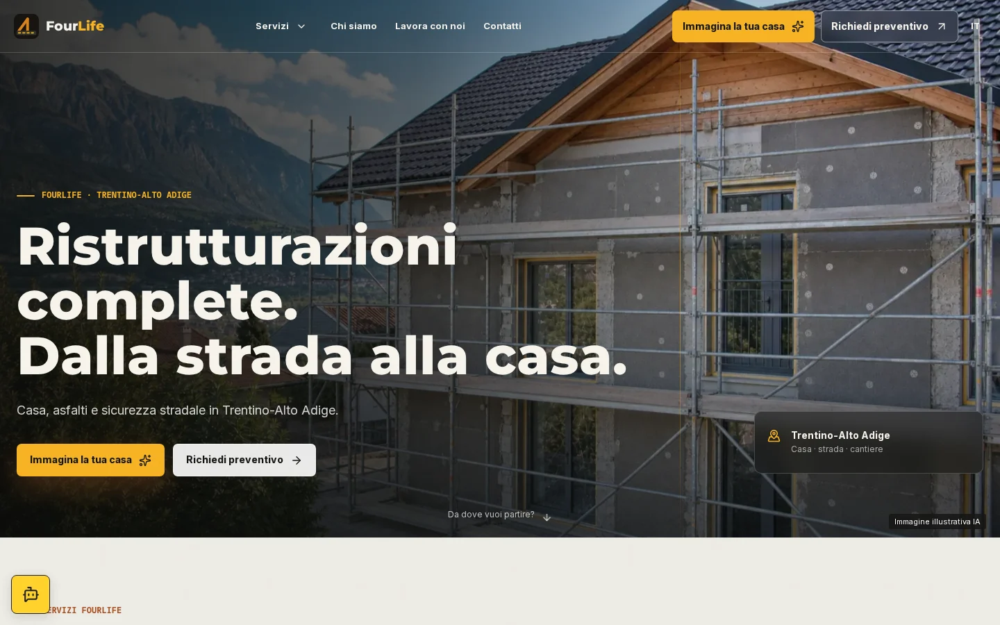
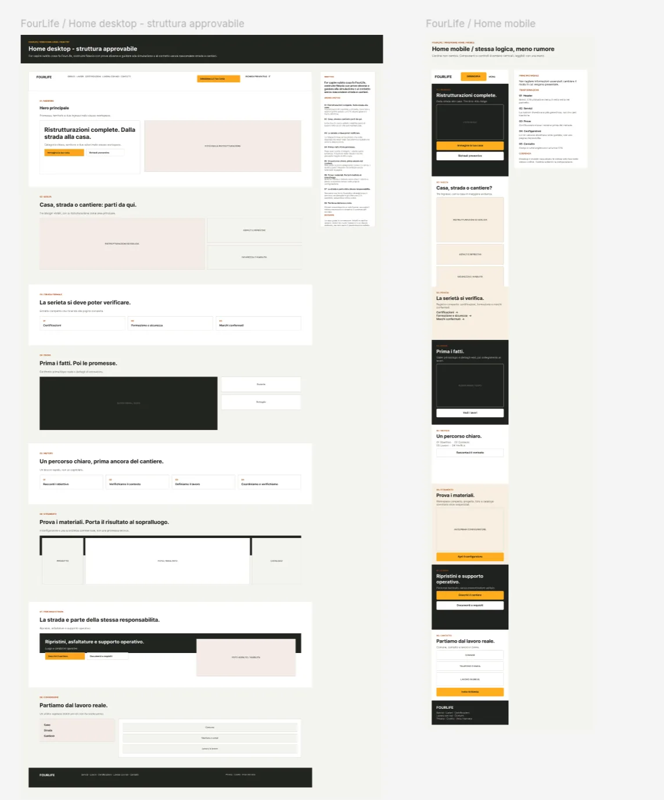

Tre ingressi per tre tipi di lavoro
Abbiamo organizzato la navigazione attorno a ristrutturazioni, asfalti e sicurezza stradale. Nei primi disegni delle pagine abbiamo affiancato desktop e telefono per scegliere quali informazioni lasciare in primo piano: il tipo di intervento, i lavori da vedere e il passaggio alla richiesta di preventivo.

